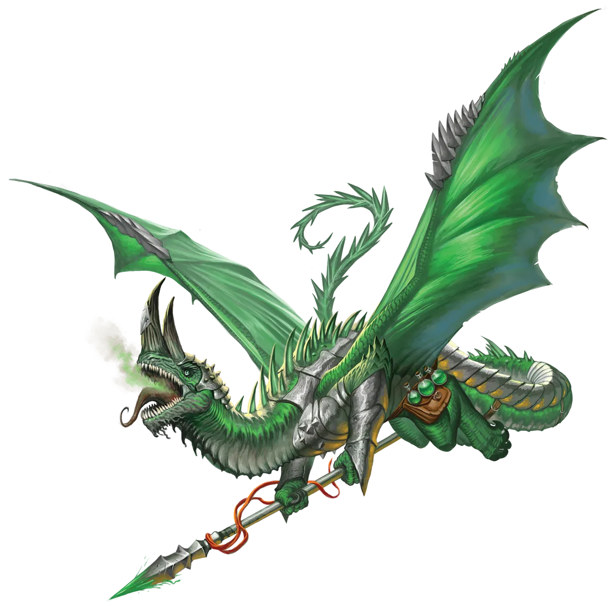

痴迷钻研
我们绿龙往往只有少数狭窄的研究领域，认为它们是最值得研究的。许多绿龙只专注于单一课题。然而，从一条龙到另一条龙，课题在所有研究领域中差异巨大。一条绿龙可能更喜欢记录贵族和王室的族谱，另一条则研究星辰和其它天体的运行，第三条则想了解猛犸象的迁徙模式。像您这样敏锐的读者此刻想必已经明白，我的执着在于永恒圣光仪式以及举行该仪式的永光龙。这个仪式是如何运作的？谁创造了它？为什么？它正如何重塑我们的社会？我必须知道！
绿龙 Green Dragon |
|
|
绿龙对知识的执着追寻，常常促使它们举行永恒圣光仪式以进一步推进这一追求。毕竟，仪式后迅速增强的不仅仅是物理和魔法力量，还有知识本身。未举行过仪式的绿龙往往比其它色彩龙更能接纳那些已举行仪式的同类。它们之间的争端更可能源于学术上的分歧，如对私爱理论和假设的争执、对含混文本段落的不同解读，或某个主题中什么构成正统经典的界定范围。许多永恒绿龙将永恒圣光仪式之谜纳入自己的研究兴趣领域。它们认为，深入了解其起源将揭示仪式更深层的秘密，也许还能找到通往更高级仪式的路径，一条能让其它龙类承认它们卓越智慧的道路。 尽管大多数绿龙偏好独处以进行研究，并以笔名仅通过书面信件与其它学者交流，但那些举行过仪式的绿龙则更可能亲身与赢得它们尊重的学者交往，常常以类人形态掩饰身份。永恒绿龙因深知必须将自己逼至极限才能充分体验仪式的全部效益，从而从孤寂中走出。但它们的谨慎使它们选择与其他永光龙，甚至类人或非龙族一同冒险，而非独自面对这些危险。绿龙能够克服对独居生活的倾向，尽管常常带着犹豫，但拥有学术兴趣的冒险同伴能帮助它们敞开心扉，拥抱友谊……只要不在学术问题上产生分歧并转而成为对手。这样的竞争对冒险同伴而言可能尤为激烈，因为若无法维护自己的立场，可能会让绿龙完全失去兴趣；但最能激起绿龙愤怒的，莫过于在其痴迷的专业领域中彻底击败它。 它们对自然的热爱使其倾向于在野外环境中进行任务和冒险，而且令人惊讶的是，它们愿意协助对抗威胁其冒险和居住区域附近的灾祸，因为它们视这些为不雅观，是对自身声誉的玷污。另一方面，失落的知识或奇异珍贵的古物是冒险绿龙最大的动力。这两种倾向常常交织于丛林密布的远古文明废墟之中，因此这些地方成为冒险绿龙的最爱。绿龙倾向于选择基于研究的职业，如法师，但它们也常常专精于与自然相关的职业，如德鲁伊。也许没有哪个职业比拥有至高妖精宗主的魔契师更能完美结合这两者，因此愿意向宗主宣誓的永恒绿龙往往发现这一使命特别适合它们的本性。 痴迷钻研 我们绿龙往往只有少数狭窄的研究领域，认为它们是最值得研究的。许多绿龙只专注于单一课题。然而，从一条龙到另一条龙，课题在所有研究领域中差异巨大。一条绿龙可能更喜欢记录贵族和王室的族谱，另一条则研究星辰和其它天体的运行，第三条则想了解猛犸象的迁徙模式。像您这样敏锐的读者此刻想必已经明白，我的执着在于永恒圣光仪式以及举行该仪式的永光龙。这个仪式是如何运作的？谁创造了它？为什么？它正如何重塑我们的社会？我必须知道！ 绿龙特质 Green Dragon Traits 你出身于一脉执着而考究的学者――绿龙世系。 |
 |